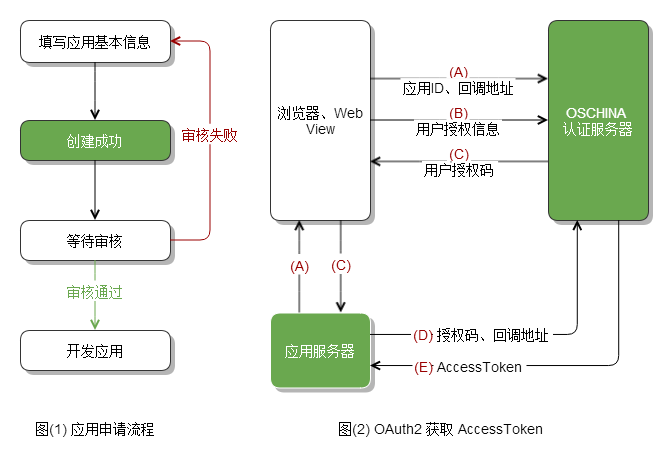

1.3 OAUTH授权指南
1.准备
- 开通您应用对应的客户端授权ID及客户端秘钥，用于授权请求。
- 所有接口采用http协议交互，请求头content-type为application/x-www-form-urlencoded
- 开放平台API均采用restful风格接口，返回数据为json格式。
2.授权流程
- 你的应用通过认证模块授权接口发起授权请求获取access_token
- 授权方式为 client_credentials时，发送client_id及client_secret获取客户端授权token
- 授权方式为 password时，发送client_id,client_secret,username,password 获取用户授权token，仅用户授权token可操作用户授权API
- 通过获取的access_token请求API进行数据请求。
access_token是公众号的全局唯一票据，调用各接口时都需使用access_token。开发者需要进行妥善保存。access_token的存储至少要保留512个字符空间。access_token的有效期目前为2个小时，需定时刷新，重复获取将导致上次获取的access_token失效。
授权流程图
